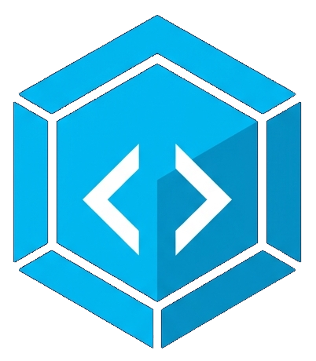

Bloqcode Play
Mini Apps, Tests & Juegos Ligeros
Soluciones simples, hechas con pequeños bloques de código, para desconectar y reflexionar en un mundo en caos.
Medidor de Emociones
Explora tu estado emocional, identifica qué sientes y encuentra equilibrio a través de este test reflexivo.
El Ahorcado
Pon a prueba tu vocabulario, adivina las palabras letra por letra y rescata al personaje antes de agotar tus intentos.
Sudoku
¿Cómo está tu agilidad lógica? Completa la cuadrícula de números y registra tus mejores marcas de tiempo.
Atrapa al Topo
A ver qué tan veloz eres para reaccionar y atrapar a estos pillines antes de que se escondan.
Medidor de Toxicidad
¿Eres una persona tóxica o una víctima del entorno? Descubre tu nivel exacto con este test sin filtros.
Atrapa al Grinch
Salva la navidad atrapando al Grinch antes de que se lleve todos los regalos y arruine la fiesta.
Nuevos minijuegos, herramientas lógicas y experimentos interactivos en desarrollo constante.